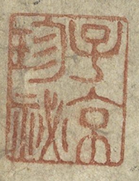

子京珍秘 “Zi Jing Zhen Mi”
“Treasured Secret of Zi Jing”

Historical Background: The Man Behind the Seal
The seal reading 子京珍秘(Zi Jing Zhen Mi) — literally “Treasured Secret of Zi Jing”—belongs to Xiang Yuanbian> (b.1525–d.1590), the greatest private collector in Ming dynasty China. Xiang Yuanbian, courtesy name Zi Jing, sobriquet “Molin Shanren” (Man of the Inkwood Mountain), was a collector and painter whose family wealth allowed him to amass an unrivaled treasury of calligraphy and painting stored in his famous studio, the Tianlai Ge (Pavilion of Celestial Music).
From an early age Xiang was consumed by the passion for collecting. Having grown wealthy through the pawnbroking trade, he drew masterworks from across the realm into his hands, becoming the foremost private collector in the country. His acquisitions spanned calligraphy by Wang Xizhi, Su Shi, Huang Tingjian, Mi Fu, and Zhao Mengfu, and paintings by Gu Kaizhi, Wang Wei, Song Huizong, Zhao Mengfu, Wang Meng, Wu Zhen, Ni Zan, Huang Gongwang, Wen Zhengming, and Qiu Ying, among countless bronzes, jades, and rare books.
The scroll’s provenance shows that after passing through the hands of Wen Zhengming and his son Wen Peng, Autumn Colors on the Qiao and Hua Mountains entered Xiang Yuanbian’s collection, where it received a dense array of his seals, of which “Zi Jing Zhen Mi” is among the most significant.
The Seal Within Xiang’s System of Marks
“Zi Jing Zhen Mi” is one of a vast repertoire of seals Xiang deployed across his holdings. Xiang Yuanbian possessed approximately one hundred collector's seals, among his most frequently used being “项元汴印,” “项氏子京,” “子京,” “项子京家珍藏,” “墨林,” “墨林山人,” “墨林秘玩,” “项墨林鉴赏章,” “天籁阁,” and “神品.” Within this system, “子京珍秘” occupies a particular register: it combines his courtesy name Zi Jing with the term zhen mi (珍秘), meaning “treasured secret” or “prized arcanum.” This phrase signals not merely possession but a heightened, almost sacred valuation—the object is not just owned but reverently guarded.
Cultural and Artistic Significance
A Connoisseurship System Made Visible
In Ming literati culture, a collector’s seal was not mere graffiti—it was a statement of aesthetic judgment. A contemporary noted of Xiang: “Zi Jing is broadly learned in antiquity, refined in connoisseurship, and devoted to the calligraphy of the ancients as to food and drink. Whenever he acquired a rare work, price was no object—and so the celebrated masterworks of the southeast flowed into his hands.” The seal “Zi Jing Zhen Mi” thus functions as a connoisseurial verdict—a declaration that Xiang had examined the work, judged it authentic, and elevated it to the innermost sanctum of his collection.
The Controversy of Seal Saturation
Xiang’s practice of stamping seals prolifically on his acquisitions generated pointed criticism from contemporaries and later scholars alike. The Qing writer Jiang Shaoshu mocked him with a metaphor: it was as though one had “betrothed a beautiful woman with pearls and gold, then, fearing she might love another, tattooed her face—and then tattooed her entire body, leaving no patch of skin unmarked.” Jiang declared this even crueler than defiling Xi Shi herself. For the aesthetically minded, each additional Xiang seal on Autumn Colors> competes visually with Zhao Mengfu’s own spare, classical composition—a tension between the original work’s pursuit of antiquity and the collector’s exuberant possessiveness.
Yet art historians have long acknowledged the other side of this ledger. For art historians focused on documentation, these seals and colophons have been enormously useful in establishing historical provenance. “Zi Jing Zhen Mi,” however intrusive it may appear visually, anchors the scroll to a specific moment in its biography and preserves evidence of Xiang’s authentication judgment.
The Tianlai Ge as a Cultural Hub
Owning Autumn Colors placed it at the center of the most intellectually vibrant private collection in late Ming China. Dong Qichang served as a family tutor in the Xiang household and was able to survey a lifetime's worth of masterworks there—a formative experience that underpinned his eventual emergence as the supreme theorist and practitioner of literati painting. Qiu Ying spent extended periods at the Tianlai Ge copying ancient masters, a practice that transformed his technique. For these major figures, access to Autumn Colors> through Xiang’s collection was not incidental—it shaped the direction of late Ming art theory and practice.
Political and Social Significance
The Merchant Collector’s Claim to Cultural Authority
Xiang Yuanbian’s position in Ming society was structurally paradoxical. He began collecting in his teens and by his forties had become a collector of national renown—recognized as the foremost of the eight great connoisseurs of the Ming and Qing eras, with holdings that now account for a substantial portion of the Palace Museum's painting collection and the treasures of many world museums. Yet his fortune derived not from official service or land aristocracy but from commerce—the pawnbroking trade. In a society that officially ranked merchants at the bottom of the social hierarchy, Xiang’s ability to accumulate works like Autumn Colors and stamp them with seals like “Zi Jing Zhen Mi” was a form of class assertion: wealth converting itself into cultural prestige, and cultural prestige converting itself into something resembling official legitimacy.
A Deliberate Refusal of Office
Significantly, Xiang’s cultural dominance was achieved entirely outside the imperial examination system. In the early Wanli reign, the emperor summoned him to serve as an official—and he refused. This refusal was itself a statement. By declining the offer and retreating into collecting, Xiang fashioned an alternative mode of elite identity: the wealthy connoisseur-recluse, whose authority derived not from bureaucratic rank but from the breadth and depth of his holdings and the refinement of his eye. The seal “Zi Jing Zhen Mi” on Autumn Colors> encodes this alternative aristocracy, a claim to cultural sovereignty that did not require a court appointment.
The Catastrophic Dispersal and Its Aftermath
The political fragility of private cultural wealth is nowhere more dramatically illustrated than in the fate of the Tianlai Ge collection. In the sixth intercalary month of the second year of the Shunzhi reign (1645), Qing forces breached the walls of Jiaxing. The accumulated treasures of the Xiang family across generations were plundered wholesale by the Qing commander Wang Liushui, leaving nothing behind. The scattered works subsequently flowed, for the most part, into the Qing imperial palace, and today are held across the Palace Museum in Beijing, the National Palace Museum in Taipei, and major institutions worldwide.